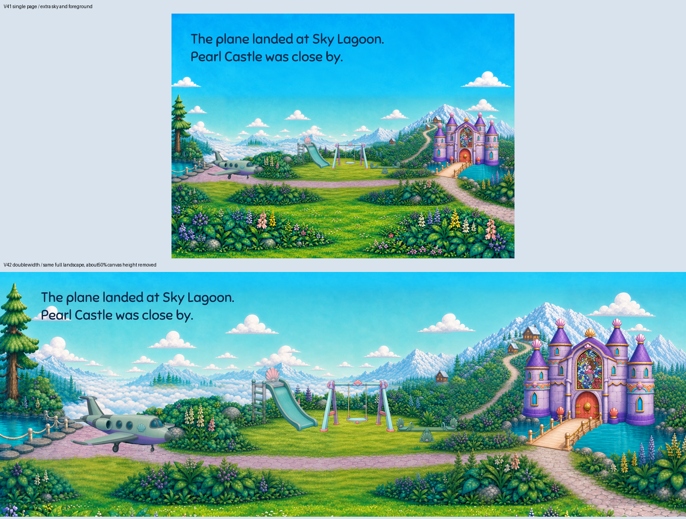
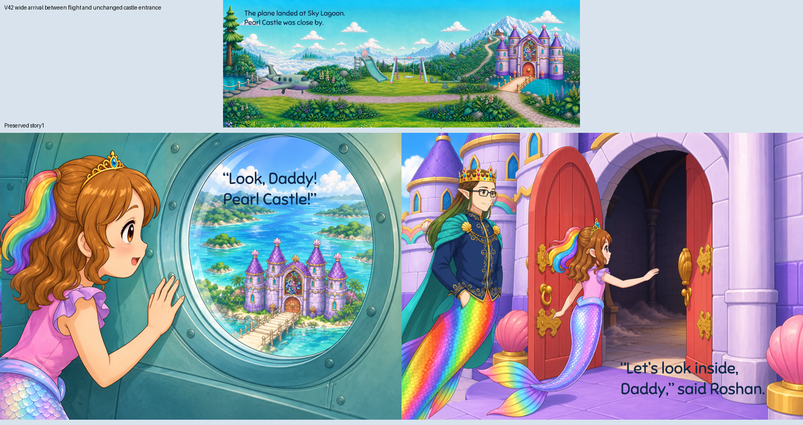
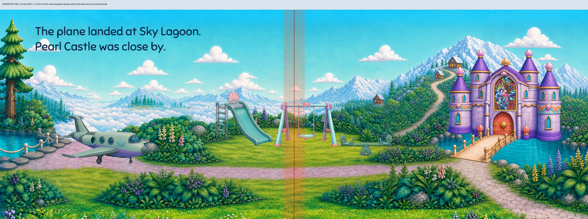

One continuous full-width source window. Around half the previous canvas height is removed; both water areas, landing, playground, route and castle remain. This is a mixed-width illustration review. Actual binding/page assignment is held.
Read book · Wide page PDF · Exact crop/source · Independent critique · Five focused reviews



The tinted band is a review overlay only. It identifies the swing as a future physical-binding concern; it is absent from the delivered illustration.
